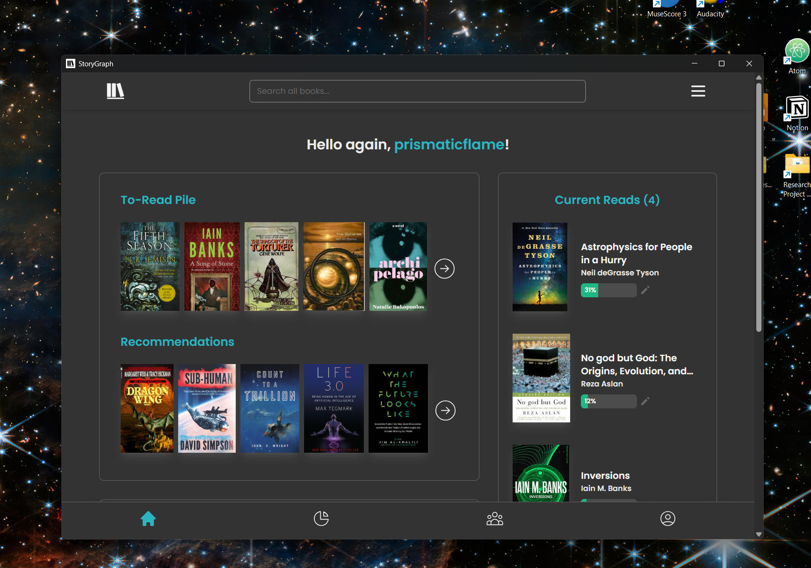

StoryGraph Desktop
Your reading life, always at hand.
A lightweight desktop wrapper for TheStoryGraph, sitting quietly in your system tray so your reading tracker is never more than a click away.

Lives in the tray
Closing the window doesn't quit the app — it stays in your system tray, ready when you are.
Launch at startup
Optionally start with Windows, silently in the background. No window popup, just the tray icon.
Lightweight
Built with Tauri — a tiny native binary that loads the full StoryGraph web app without the browser overhead.